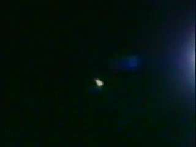

Le météore filmé par Kirkpatrick à
Fresno

Mer 0922:00 Devant le théâtre de Manchester au centre de Fresno (Californie), Tony Kirkpatrick, nouveau photographe à KGPE, interviewe un fan de film
quand il aperçoit de la lumière. Il tourna sa camera pour capturer quelques s de course. Kirkpatrick raconte : Je
filme toujours avec les 2 yeux ouverts et j'ai remarqué cette lumière brillante au moment de l'interview. D'abord
j'ai pensé à un hélicoptère de police en patrouille tout près mais je n'ai pas entendu de moteur, j'ai regardé ce
que c'était. En même temps, le publique du théâtre a réagi à la lumière, elle nous a tellement illuminée.